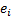
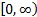
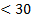
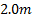
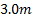
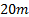
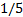

| Volume 1, Year 2014 - Pages 11-21 | View PDF (Full-text) |
| DOI: 10.11159/jacr.2014.002 | Linked References |
| ISSN: 2368-6677 | |
Terrain Roughness Identification for High-Speed UGVs
Graeme N. Wilson, Alejandro Ramirez-Serrano
University of Calgary, 2500 University Dr NW, Calgary, Canada T2N 1N4
gnw.wilson@gmail.com; aramirez@ucalgary.ca
Abstract- High-speed navigation of autonomous Unmanned Ground Vehicles (UGVs) in rough unknown terrains requires the detection and identification of the terrain in order to make effective navigation decisions. This paper investigates a geometrical approach to identifying terrain based on its roughness using the terrain elevations from a point cloud generated using a 3D camera. This roughness, called the Roughness Index (RI), is used to identify different terrains by overlaying the terrain with a grid map and using the standard deviation of the point cloud elevations in each grid cell. The experimental testing and results of this terrain identification technique are presented as determined from field experiments using an experimental UGV test platform on rough outdoor terrains.
Keywords: Terrain classification, Unmanned ground vehicles, Terrain identification, Terrain roughness detection
© Copyright 2014 Authors - This is an Open Access article published under the Creative Commons Attribution License terms. Unrestricted use, distribution, and reproduction in any medium are permitted, provided the original work is properly cited.
Date Received: 2014-05-26
Date Accepted: 2014-09-04
Date Published: 2014-10-14
1. Introduction
Unmanned Ground Vehicles (UGVs) are becoming increasingly prevalent in everyday life as these complex systems are being used in applications including surveillance, military, law enforcement, industrial hauling, and search and rescue. In order for these systems to navigate effectively in any environment they must be able to detect the terrain and react accordingly. When traveling at high speeds sudden changes in terrain characteristics, without modification of UGV navigation behaviour, may damage the vehicle due to excessive terrain interaction forces. In order to avoid such occurrences techniques for predicting the terrain the UGV will encounter are essential to allow for navigation decisions to be made in advance of the vehicle physically encountering the terrain. This paper investigates the challenge of predictive terrain identification to perform navigation decisions for high-speed UGVs.
1.1.Related Work
Methods for the identification of terrain for the purpose of traversability analysis fall into three main categories as identified by Papadakis [1]: i) proprioceptive, ii) appearance based, and iii) geometry based. Proprioceptive based techniques such as those proposed by Sadhukhan [2], Brooks et al. [3], Weiss et al. [4], and DuPont et al. [5] have used frequency domain vibration information measured from UGV mounted accelerometers along with machine learning techniques to classify terrain into discrete terrain types (e.g. grass, gravel, dirt). These works noted that the vibration measurements used to classify terrain changed with vehicle speed for the same terrain making the classification techniques speed dependent. To address this speed dependency for a car type vehicle work by Ward and Iagnemma measured the un-sprung mass acceleration and used a quarter car model, along with the speed of the vehicle, to estimate the spatial profile as an input to a Support Vector Machine (SVM) terrain classifier [6]. In a similar approach by Collins and Coyle four one degree of freedom suspension elements were considered attached to a rigid body, with linear vertical velocity, pitch rate, and roll rate of the vehicles body sensor readings being used to estimate the spatial terrain profile as an input to a Neural Network (NN) classifier [7].
The problem with these approaches is that proprioceptive terrain identification techniques are limited to reactive classification of terrain, which means that sudden terrain changes when the vehicle is traveling at high-speed may damage the vehicle before it can alter its navigation behaviour. Additionally, these works all focused on terrain classification into discrete terrain classes. Terrain classes such as dirt, grass, and gravel provide no specific measure of traversability other than a class label (e.g. knowing one terrain is grass and another is gravel provides no inherent information about which terrain can be travelled on at a higher speed without further knowledge), which means that further a priori knowledge of the traversal characteristics for each terrain type must be predetermined or learned by a machine learning algorithm. For large numbers of terrain classes this is a significant and time consuming challenge, which is further complicated since vehicles with different dynamics will have different terrain traversability characteristics.
Appearance based techniques identify terrain predictively, providing a solution to the problem of the reactive nature of proprioceptive techniques. One approach to appearance based terrain identification is to perform binary classification whereby terrain is identified as either traversable or non-traversable [8]-[11]. The approaches by Shneiera et al. in [8] and Thrun et al. in [9] were in fact a hybrid approach which used geometric sensors to identify nearby non-traversable features with an algorithm identifying similar appearing non-traversable regions in camera images for longer range terrain prediction. Kim et al. took a different approach by training a visual classifier to identify non-traversable regions through a hand labelled training set [10]. The most recent approach by Milella et al. uses radar to detect ground and non-ground areas, the results being used to train a visual classifier to detect these binary classes [11]. The problem with binary approaches is that the degree of traversability is not determined (e.g. pavement and gravel are both traversable, but the approach does not identify pavement as more traversable).
This need for more specific terrain type identification has led to multi-class based terrain identification techniques. Visual data from a camera image has been used to train machine learning techniques such as SVMs, Extreme Learning Machines (ELM), NNs, and Bayesian classifiers [12]-[18]. Work by Abbas et al. used colour and texture features along with a SVM to classify six terrain types with up to 97% accuracy. Texture only features were used by Filitchkin and Byl for terrain classification on Little Dog using an SVM classifier with up to 95% accuracy for six terrain types [16]. A comparison of ten different approaches for determining colour/texture features along with the comparison of ELM, SVM, and NN machine learning techniques on five terrain types lead to the determination by Zou et al. that the Joint Composite Descriptor (JCD) using ELM produced the best terrain classification with up to 99% accuracy [13]. This JCD was developed in work by Zagoris et al. [19]. Komma et al. performed Bayesian classification on six terrain types with accuracy of up to 95% [14]. Bayesian classification was also done by Kim et al. who went beyond terrain classification by using classified terrains to estimate the friction coefficient of the ground from known terrain type friction coefficient values [15]. A hybrid approach to visual classification used by Brooks and Iagnemma trains a vibration classifier using an SVM classifier with hand-labelled data, then these vibration classifications are used to train a visual feature based (colour and texture) SVM classifier in a self-supervised manner [17]. Another hybrid approach uses random forests decisions trees (RFDT) to classify terrains independently based on visual texture information and LIDAR data; these independent classifications are then fused to produce classification rates up to 94% accurate on four different terrain types [18].
While multi-class classification allows for the discrimination of different terrain types to enable variable navigation behaviour, there is still no specific knowledge relating to the level of traversability without further information. For these classes a method of determining the ideal navigation behaviour for each class label would either need to be trained or previously known for the specific UGV dynamics.
Geometric approaches can address the issue of recognizing specific traversability levels, although not all methods take this approach. In the most common case geometric approaches identify obstacles using a point cloud of the terrain elevations for detection of both positive and negative features [20]-[22]. Another geometric approach by Lu et al. used a 2D laser line stripper to extract spatial frequency and texture information about the terrain to perform four class classification of the terrain with over 90% accuracy [23]. While these approaches perform well, they still do not identify the level of traversability for non-obstacle terrain areas.
An example of a geometric technique that does address the level of traversability is an approach by Broggi et al. that provides a method for detecting the slope of the terrain, as well as obstacle detection, through fitting a terrain to a B-spline surface [24]. This slope estimation provides an explicit geometric measure of the terrain which is useful as a traversability metric for preventing occurrences such as rollovers.
While slope is an important measure of terrain for determining stability of the vehicle, another important aspect is to be able to assess the terrain for its roughness such that the UGV will have a traversability metric that can be used to control the speed of the vehicle (in order to prevent excessive forces on rough terrains). Bellone et al. identifies a method of detecting the normal vector of local surfaces from a point cloud and using these normal vectors to estimate the local unevenness of the terrain [25]. This unevenness measure provides a relative score of the traversability level of the terrain. With such an approach the disadvantage is that a local normal vector representation of the terrain requires the fitting of local planes which essentially produces a smoothing effect on the data (i.e. local variations in the point cloud are replaced with a smooth plane). Although the local unevenness calculation method from [25] provides a method of measuring variability of the neighbouring normal vectors, essential original geometric point cloud information may have been lost from the fitting of the planes. A method that avoids this potential loss of geometric information is proposed by El-Kabbany and Ramirez-Serrano in [26] and improved by Wilson et al. in [27]. This method identifies terrain roughness through the variance of the point elevations in a point cloud.
The method of terrain identification through geometric based roughness identification proposed by El-Kabbany and Ramirez-Serrano in [26] and improved by Wilson et al. in [27] provides a measure of the level of traversability of terrain and is a promising technique. The work in [26] and [27] provides the theoretical basis for this terrain identification technique; however, this work does not fully investigate the challenges of implementing such a technique on a real-world UGV platform, not does it provide experimental testing and results of this technique operating on a moving UGV in typical outdoor terrains.
This paper will develop metrics for determining the required point density of the point cloud for calculating the terrain roughness for the technique developed in [27]. Specifically this work will contribute a novel measure of determining the minimum number of points from a point cloud for calculating an effective roughness identification, an experimental method of selecting an appropriate grid cell size based on this minimum point threshold, and (for the first time) real-world experimental testing of this roughness identification method on a UGV travelling under field conditions in typical rough outdoor terrains.
2. Theory
Traversing a given a priori unknown terrain effectively with a UGV requires the perception of the terrain in front of the UGV. In this article this is accomplished through geometric perception of the terrain using a range sensor (e.g. stereo camera, 3D laser scanner) to produce a point cloud; experimental tests in this article used a MESA SwissRanger SR4000 3D camera. As a 3D point cloud itself is not directly useful for navigation decision making, this data must be processed to identify the terrain based on its geometrical properties. For this purpose the Roughness Index (RI) was developed. The RI is used to identify the perceived roughness of a terrain using a 3D point cloud; the RI is defined as follows:

where is the sample standard deviation of the point elevations for a sample of size , is a point elevation in the sample, is the sample mean of the point elevations, and is the ground clearance of the UGV.
The reason for the inclusion of the ground clearance in Equation (1) is for the comparison of roughness relative to the capabilities of the UGV. While mathematically the RI has a range of , where 0 is a perfectly smooth terrain and is the roughest possible terrain, in practice it can be generally visualized that any terrain with is smooth, while any terrain with is rough. The selection of 1as rough terrain is arbitrary, though mathematically it means that ~32% of the terrain point elevations are at least one ground clearance greater than the mean (which is a significant elevation change).
To demonstrate how the RI works a simulated example of a UGV identifying a sigmoid terrain is presented. In this example the ground clearance of the vehicle was set to , while the terrain elevation change was . The surface of the sigmoid terrain being identified is shown in Figure 1, while the sigmoid terrain profile is compared to the vehicle in Figure 2.
To obtain a point cloud that represented this terrain 200
random points were placed on the surface of the sigmoid (Figure 3& Figure 4) and from these the RI was
calculated. For these points the mean terrain point elevation was and
the RI was  .
From these numbers it can be seen that a terrain with an would
be quite rough, supporting the proposal that a value of 1 can be considered
rough terrain for visualization purposes.
.
From these numbers it can be seen that a terrain with an would
be quite rough, supporting the proposal that a value of 1 can be considered
rough terrain for visualization purposes.
3. Implementation
When implementing the RI for the purpose of terrain identification on a UGV one possibility is to use the entire point cloud to calculate a single RI for the entire area being captured by the 3D camera. The problem with this is that different areas of the terrain that are being captured may have dramatically different roughness. In the case of the MESA SwissRanger SR4000 the range of the camera is ~10m; this is a long distance where roughness may not be uniform. To improve the terrain identification the terrain can be divided into a 2D grid map where the dimensions are the horizontal distance in front of the camera, and the horizontal distances to the left and right of the camera. For each grid cell the RI can be calculate individually using the mean of the terrain elevation points within each cell.
For this 2D grid approach to implementing the RI it is important to take into account the number of terrain elevations points that are sampled in each grid cell. Since the RI is calculated as the sample standard deviation of the terrain point elevations it is important that this sample standard deviation be representative of the population standard deviation of the grid cell. For this purpose assume that the terrain point elevation population follows a normal distribution in each grid cell. Since each grid cell contains a sample of the terrain point elevation population consider the t-distribution that describes the distribution shape as a function of the sample size. As the sample size approaches the t-distribution is equal to the normal distribution, and therefore at a sufficiently large sample size the t-distribution is a good approximation of the normal distribution. A common arbitrarily selected value for this approximation is a sample size of 30 [28]. Therefore in this article it is assumed that if the sample size of the terrain elevation points in a grid cell is then the sample standard deviation is considered to be a sufficient approximation of the population standard deviation. In the implementation of the RI in a 2D grid map any cell with less than 30 points is labelled as invalid.
Given that it is assumed that terrain elevation points are needed in a grid cell for it to be valid, it is important to consider the size of the grid cells. If the grid cells are made too small most of the grid cells will have terrain elevation points and will be invalid. On the other hand, if the grid size is too large then smaller details about the terrain will be lost. It is therefore important to select an appropriate grid cell size based on the cameras resolution. To observe the effect of grid size on the RI grid, consider the terrain presented in Figure 5. Using a SR4000 3D camera a point cloud of the terrain was obtained (Figure 6).
From the point cloud in Figure 6, RI grids for various grid sizes were calculated. These grid sizes were , , , , and as shown respectively in Figure 7through Figure 11.
Observing Figure 7, that has the smallest grid size, it is clear that due to the point density of the camera there are limited areas of the image which have points; therefore, other than a couple high roughness obstacles (trees) only about 1 to of the terrain has any RI associated with it. In Figure 8, with a grid size, the range at which there is RI information has been extended to about 1.5 to , and the individual obstacles (trees) are still clearly visible. When the grid size reaches in Figure 9the trees have begun to be lumped together into larger areas of high RI, though at the same time the patches of trees are still separated into two areas. This grid size has extended the range of RI identified areas to about 2.5 to . When the grid size is increased yet further to as shown in Figure 10the trees have become a single area of high roughness and all fine details have been lost. The advantage to this grid size is that the range of the RI grid has been increased to about . With the largest grid (Figure 11) it can be seen that the RI scores have become generalized and there are no areas which have less than a 0.2 RI score. With this large grid size there are no fine details remaining about the terrain; however, the range of areas with RI scores is the largest (extending the full 5m).
From Figure 7to Figure 11it can be seen that it is important to have a compromise between RI grid range and the resolution of the RI grid. If the grid size is too small there will be very few areas with an RI since points fall in the majority of the grid cells. If the grid cell size is too large fine details about the terrain are lost, and the areas that do exist become more generalized as they are taking the standard deviation of points over a larger area. For the purpose of the testing in this article a grid cell size of 0.2m was selected.

4. Experimental Platform
For the experimental testing of the RI in outdoor terrains on a moving UGV an experimental test platform had to be developed. This custom test platform is shown in Figure 12.

This vehicle was custom made for the AR2S Laboratory running a multitude of sensors for terrain identification and vehicle state estimation. The state of the vehicle (position, velocity, orientation) is estimated using an IMU, GPS, and wheel encoders running various algorithms including a Kalman filter for positioning data. The SwissRanger SR4000 mounted on the front of the vehicle is the 3D camera which captures the point cloud. The Arduinos handle the motor control and the sensor data acquisition while the Shuttle PC collects, processes, and stores the experimental data. The UGV was driven by remote control with the XBee wireless transmitter receiving the motion commands. This vehicle had a ground clearance of .
5. Experimental Testing and Results
During the experimental testing the UGV was driven at a speed of ~1.5m/s. During the testing the point cloud of the terrain was captured and stored in real time along with the vehicle state estimates in 10 to tests. The UGV was driven through a variety of terrains including roots, pavement, gravel, and grass (Figure 13to Figure 16).
After the data was gathered it was processed in the lab to produce the RI in a graphical RI grid map. The processing time of the point clouds for each run into RI grids took approximately of the time each experiment was run (i.e. a 25s test run took 5s to process and plot). This means this terrain identification technique is suitable for real-world applications since it is able to run in real-time. The results for each of the terrains are shown below (Figure 17to Figure 20).
From Figure 17through Figure 20it can be seen that the Root terrain (Figure 17) is the roughest RI grid (as expected), while the other three terrains are more similar in appearance. It can be noted that the pavement (Figure 18) and gravel (Figure 19) terrains are almost identical in appearance, which is to be expected since they are both relatively smooth and hard surfaces. It should be mentioned that especially in the gravel terrain there are some isolated areas of high roughness. These areas are attributed to artifacts introduced by the parking lot lighting. It was noticed that streetlights caused errors in the SwissRanger SR4000 cameras point cloud; presumably the wavelength of the light being output by the lights is the same as that of the SR4000's TOF sensors. The grass terrain (Figure 20) was slightly different than the pavement and gravel, having areas of moderate roughness (RI0.5). This is because the grass, instead of the ground underneath, is being detected by the SR4000 and the point cloud is producing a rougher appearing terrain than actually exists. This is an issue with all current sensors and deformable terrain/vegetation. Current sensor technology and techniques have a very difficult time dealing with obstructions and terrain such as tall grass.

Addressing the most dynamic terrain again, the root terrain (Figure 21), observe a comparison of different areas of the terrain in Figure 22. The first area labelled Area 1 corresponds to a large horizontal root. As expected, in the RI grid this is detected as a feature. Area 2 is a large wide collection of roots that is also detected properly in the RI grids as a large area of high roughness. Finally, Area 3 is a smoother area of dirt that is also correctly identified in the RI grid. From this it is concluded that the RI is performing properly and correctly identifying areas of high and low roughness.
5.1. Discussion
The results in Section 0 demonstrate the RI effectively identifying terrain for a UGV traveling in typical outdoor terrain. In comparison to proprioceptive techniques such as in [4]-[6]this technique is capable of predicting upcoming terrains. This allows for a UGV to make navigation decisions using the predicted terrain roughness before physically encountering the terrain, preventing dangerous vehicle-terrain interaction forces. Existing predictive techniques that identify traversable and non-traversable terrains in [8]-[11]do not provide the same level of detail as the RI and allow only for navigation decisions regarding where not to travel. As seen in the results shown in this paper terrain is identified with varying levels of roughness meaning a UGV can make more precise navigation decisions. These precise navigation decisions could involve selecting vehicle speed as a function of the RI (to prevent damage on high roughness areas, and allow for fast travel on low roughness areas), thus allowing for the vehicle to optimize a path across the terrain that would be as fast and safe as possible.
Techniques exist for identifying classes of traversable terrains in the form of multi-class classification approaches [12]-[18]. While these approaches could also enable more precise navigation decisions the problem is that identifying that terrain is of one class or another does not, considered alone, provide any information about the relative traversability of the terrain. For example, knowing the terrain type is either grass or gravel with no additional information does not assist in determining which terrain is more traversable; however, knowing one terrain has a RI of 0.4 and another has a RI of 0.7 clearly indicates that it would be easier to traverse the terrain with the lower roughness of 0.4. For multi-class classification approaches significant additional effort must be made to characterize each terrain class and determine the relative navigability.
There do exist other geometric approaches to terrain identification that provide an explicit relative measure of the terrain's traversability. For example the work in [24] presented a method of estimating the terrain slope. This approach serves a different purpose to the RI presented in this paper; it can be used to determine the stability of the UGV as it traverses terrain. What this method of slope prediction is not able to provide is a method of predicting the relative measure of terrain interaction forces. For high RI the higher roughness would cause higher vehicle-terrain interaction forces, while lower RI would cause smaller forces. This information can be used to determine speed of the vehicle for the navigation behaviour.
Another approach for geometric relative traversability has also been developed in [25]. This approach identified the normal vector for local surfaces of the terrain, and a comparison of neighbouring normal vectors was used to calculate an unevenness measurement of the terrain. While this is basically another approach to roughness identification of the terrain, the method of calculating unevenness from a comparison of normal vectors of the local surfaces causes the loss of geometric information for the terrain. These unevenness measures provide only a relative comparison of the terrain unevenness when compared with respect to another unevenness measure. The RI, on the other hand, preserves key geometric information about the terrain. Given that the RI is essential a measure of the standard deviation of the points within a grid cell, this standard deviation (along with an assumed standard distribution of points) can be used to estimate key terrain characteristics such as probabilistic maximum step height of the terrain (through estimating maximum/minimum expected point elevations for the specific value of the standard deviation). Potential applications for this maintained geometric information include predictive explicit terrain-vehicle interaction force estimation through using the probabilistic step height as an input to a dynamics model of the UGV.
This paper has demonstrated that the RI is capable of providing predictive measure of terrain traversability with calculations performed in real-time which in future work will enable a UGV to make effective navigation decisions in advance of physically encountering potential dangerous terrain. It has also demonstrated that is can effectively detect the relative traversability of the terrain for use in navigation decision making while maintaining geometric information pertaining to the standard deviation of the point distribution within each grid cell (potentially useful in applications of predicting terrain-interaction forces).
While this technique of terrain identification using the RI has presented many advantages, there are aspects of the technique that need to be improved or supplemented by another technique. For example, the RI does not provide information about the terrain slope. When making navigation manoeuvres vehicle stability is important and additional information about terrain slope is necessary to supplement the terrain information provided by the RI. Additionally, the RI is dependent on a high density point cloud of the environment. Typical geometric sensors currently have either limited range (e.g. time of flight cameras), have significant resolution limitations as range increases (e.g. laser scanners), or have substantially increasing error as range increases (e.g. stereo camera, error is proportional to square of distance). Further development of sensor technologies which provide a long range dense point cloud, or methods of extrapolating short range point clouds to longer ranges, will be necessary for high-speed travel since the UGV must at least be able to have time to come to a complete stop after dangerous terrain features are detected (e.g. stopping distance for a typical car is 55m at 96km/h [29]). This technique also runs into limitations in terrains with features such as dense vegetation where the 3D point cloud of the terrain is prevented from detecting the true surface of the terrain and instead picks up the features of the vegetation. Sensor technologies for detecting the true surface of the terrain through obstructions (such as vegetation) will need to be developed. Finally, the RI also considers all terrain is rigid. Deformable terrains are not accounted for in the RI, and it will be an area for further investigation to determine methods to account for this deformability.
6. Conclusion
This paper presented a geometrical terrain identification approach, the Roughness Index (RI), that identified terrain based on the roughness of the terrain using the point cloud of a 3D camera sensor. Techniques for implementing the RI on real world terrains using a grid map were investigated. Comparisons of different grid size selections and their effect on the RI grid map were discussed. It was found that as the grid size was increased the effective range of the 3D camera was increased (due to the sparsity of points at longer ranges); however, this range increase came at the cost of losing terrain details. It was therefore concluded that a compromise must be selected between RI grid range and the detailed resolution of the grid.
This technique was also implemented on an experimental UGV platform for real-world testing. During the testing the RI was computed for a variety of terrains (grass, gravel, pavement, roots). It was found that the RI performed well at correctly identifying areas of high and low roughness. It was also concluded that the algorithm was fast enough to run in real time for high-speed vehicles, meaning it can be used in real-world applications.
Further work planned in this area includes expanding this roughness detection to account for terrain deformability (the technique proposed here assumes all terrain is rigid), and extrapolating terrain roughness to distant terrain using terrain appearance in a camera image (since 3D point cloud generating sensors are either short range or have low point density at long ranges), and methods to account for point cloud obstructions (e.g. vegetation).
References
[1] P. Papadakis, "Terrain traversability analysis methods for unmanned ground vehicles: A survey," Eng. Appl. Artif. Intell., vol. 26, no. 4, pp. 1373-1385, 2013. View Article
[2] D. Sadhukhan, "Autonomous ground vehicle terrain classification using internal sensors," MIT Press, 2004. View Article
[3] C. A. Brooks and K. Iagnemma, "Vibration-Based Terrain Classification for Planetary Exploration Rovers," in IEEE Transactions on Robotics, 2005, vol. 21, no. 6, pp. 1185-1191. View Article
[4] C. Weiss, M. Stark, and A. Zell, "SVMs for Vibration-Based Terrain Classification," in Autonome Mobile Systeme, 2007, pp. 1-7. View Article
[5] E. M. DuPont, C. A. Moore, E. G. Collins, and E. Coyle, "Frequency response method for terrain classification in autonomous ground vehicles," Auton. Robot, vol. 24, no. 4, pp. 337-347, 2008. View Article
[6] C. C. Ward and K. Iagnemma, "Speed-independent vibration-based terrain classification for passenger vehicles," Veh. Sys. Dyn., vol. 47, no. 9, pp. 1095-1113, 2009. View Article
[7] E. G. Collins and E. J. Coyle, "Vibration-Based Terrain Classification Using Surface Profile Input Frequency Responses," in IEEE Int. Conf. on Robot. and Autom., 2008, pp. 3276-3283. View Article
[8] M. Shneier, T. Chang, T. Hong, W. Shackleford, R. Bostelman, and J. S. Albus, "Learning traversability models for autonomous mobile vehicles," Auton. Robots, vol. 24, no. 1, pp. 69-86, 2008. View Article
[9] S. Thrun, M. Montemerlo, H. Dahlkamp, D. Stavens, A. Aron, J. Diebel, P. Fong, J. Gale, M. Halpenny, G. Hoffmann, K. Lau, C. Oakley, M. Palatucci, V. Pratt, P. Stang, S. Strohband, C. Dupont, L. Jendrossek, C. Koelen, C. Markey, C. Rummel, J. Van Niekerk, E. Jensen, P. Alessandrini, G. Bradski, B. Davies, S. Ettinger, A. Kaehler, A. Nefian, and P. Mahoney, "Stanley : The Robot that Won the DARPA Grand Challenge," J. F. Robot., vol. 23, no. 9, pp. 661-692, 2006. View Article
[10] D. Kim, S. M. Oh, and J. M. Rehg, "Traversability classification for UGV navigation: a comparison of patch and superpixel representations," in IEEE/RSJ Int.Conf. on Intel. Robots and Systems, 2007, pp. 3166-3173. View Article
[11] G. Reina and J. Underwood, "A Self-learning Framework for Statistical Ground Classification using Radar and Monocular Vision," J. F. Robot., pp. 1-22, 2014. View Article
[12] S. M. Abbas, A. Muhammad, S. A. Mehdi, and K. Berns, "Improvements in Accuracy of Single Camera Terrain Classification," in IEEE Int. Conf. on Adv. Robot., 2013, pp. 1-6. View Article
[13] Y. Zou, W. Chen, L. Xie, and X. Wu, "Comparison of different approaches to visual terrain classification for outdoor mobile robots," Pattern Recognit. Lett., vol. 38, pp. 54-62, 2014. View Article
[14] P. Komma, C. Weiss, and A. Zell, "Adaptive Bayesian Filtering for Vibration-based Terrain Classification," in IEEE Int. Conf. on Robotics and Automation, 2009, pp. 3307-3313. View Article
[15] J. Kim, D. Kim, J. Lee, J. Lee, H. Joo, and I. K. Member, "Non-contact Terrain Classification for Autonomous Mobile Robot," in IEEE Int. Conf. on Robotics and Biomimetics, 2009, pp. 824-829. View Article
[16] P. Filitchkin and K. Byl, "Feature-based terrain classification for LittleDog," in IEEE/RSJ International Conference on Intelligent Robots and Systems, 2012, pp. 1387-1392. View Article
[17] C. A. Brooks and K. Iagnemma, "Self-Supervised Terrain Classification for Planetary Surface Exploration Rovers," J. F. Robot., vol. 29, no. 3, pp. 445-468, 2012. View Article
[18] S. Laible, Y. N. Khan, and A. Zell, "Terrain classification with conditional random fields on fused 3D LIDAR and camera data," in European Conference on Mobile Robots, 2013, pp. 172-177. View Article
[19] K. Zagoris, S. a. Chatzichristofis, N. Papamarkos, and Y. S. Boutalis, "Automatic Image Annotation and Retrieval Using the Joint Composite Descriptor," in 14th Panhellenic Conference on Informatics, 2010. View Article
[20] C. Armbrust, T. Braun, T. Fohst, M. Proetzsch, A. Renner, H. Schafer, B., and K. Berns, "Ravon - the robust autonomous vehicle for off-road navigation," in IARP International Workshop on Robotics for Risky Interventions and Environmental Surveillance, 2009, pp. 1-28. View Article
[21] J. Larson, M. Trivedi, and M. Bruch, "Off-Road Terrain Traversability Analysis and Hazard Avoidance for UGVs," in California University San Diego Dept of Electrical Engineering, 2011, pp. 1-7. View Article
[22] W. Wang, M. Shen, J. Xu, W. Zhou, and J. Liu, "Visual traversability analysis for micro planetary rover," in IEEE International Conference on Robotics and Biomimetics, 2009, pp. 907-912. View Article
[23] L. Lu, C. Ordonez, E. G. Collins, E. Coyle, and D. Palejiya, "Terrain surface classification with a control mode update rule using a 2D laser stripe-based structured light sensor," Rob. Auton. Syst., vol. 59, no. 11, pp. 954-965, 2011. View Article
[24] A. Broggi, E. Cardarelli, S. Cattani, and M. Sabbatelli, "Terrain mapping for off-road Autonomous Ground Vehicles using rational B-Spline surfaces and stereo vision," in IEEE Intel. Veh. Symp, 2013, pp. 648-653. View Article
[25] M. Bellone, A. Messina, and G. Reina, "A new approach for terrain analysis in mobile robot applications," in IEEE International Conference on Mechatronics, 2013, pp. 225-230. View Article
[26] A. El-Kabbany and A. Ramirez-Serrano, "Terrain Roughness Assessment for High Speed UGV Navigation in Unknown Heterogeneous Terrains," Int. J. Inf. Acq., vol. 7, no. 2, pp. 165-176, 2010. View Article
[27] G. N. Wilson, A. Ramirez-Serrano, M. Mustafa, and K. A. Davies, "Velocity Selection for High-Speed UGVs in Rough Unknown Terrains Using Force Prediction," in 5th Int. Conf. on Intel. Robotics and App., 2012, pp. 387-396. View Article
[28] J. T. McClave and T. Sincich, Statistics, 11th ed. Pearson, 2009. View Book
[29] Department for Transport and Driver and Vehicle Standards Agency, "Typical Stopping Distances," The Highway Code, 2007. [Online]. Available: https://www.gov.uk/government/uploads/system/uploads/attachment_data/file/312249/the-highway-code-typical-stopping-distances.pdf. [Accessed: 16-Aug-2014]. View Article